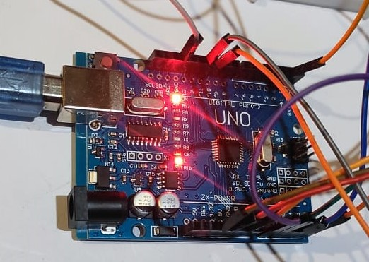

Components
Arduino UNO
Arduino UNO is based on an ATmega328P microcontroller. The board consists of digital and analog Input/Output pins (I/O), shields, and other circuits.The Arduino UNO includes 6 analog pin inputs, 14 digital pins, a USB connector, a power jack, and an ICSP (In-Circuit Serial Programming) header. It is programmed based on IDE, which stands for Integrated Development Environment. It can run on both online and offline platforms.
Motor Driver

L298N Motor Driver Module is a high-power motor driver perfect for driving DC Motors and Stepper Motors. It has an onboard 5V regulator which it can supply to an external circuit. It can control up to 4 DC motors, or 2 DC motors with directional and speed control.
DC Pump

DC pumps use direct current (DC) as a power source, unlike conventional pumps that use alternating current (AC). DC pumps have several advantages over AC pumps, including direct energy conversion, Battery storage and Lower energy consumption
LCD

It stands for Liquid Crystal Display which are ideal for displaying only characters. A 16×2 character LCD, can display 32 characters across two rows. LCD is connected with Inter-Integrated Circuit I2C which can reduce the difficulty of make, so that makers can focus on the core of the work. We use the Arduino library for I2C_LCD, user just need a few lines of the code can achieve complex graphics and text display features.
Temperature & Humidity Sensor

The DHT11 is a commonly used Temperature and humidity sensor that comes with an 8-bit microcontroller to output the values of temperature and humidity as serial data. The sensor can measure temperature from 0°C to 50°C and humidity from 20% to 90% with an accuracy of ±1°C and ±1%.
Ultrasonic Sensor

An ultrasonic sensor is an instrument that measures the distance to an object using ultrasonic sound waves.An ultrasonic sensor uses a transducer to send and receive ultrasonic pulses that relay back information about an object’s proximity. High-frequency sound waves reflect across boundaries to produce distinct echo patterns.
Servo Motor

A servomotor is a rotary or linear actuator that allows for precise control of angular or linear position, velocity, and acceleration in a mechanical system. It constitutes part of a servomechanism, and consists of a suitable motor coupled to a sensor for position feedback and a controller.
DC Shaft Motor
.jpg)
A machine that converts direct current into mechanical work, is called a DC motor. The shaft in a motor is a cylindrical component that extrudes out from the motor and its housing. DC motors have high sustained torque. This makes them ideal for robotics applications that require a constant force. Furthermore, DC motors have a wide range of speed capabilities that make them ideal for robotics applications that require accurate speed control.